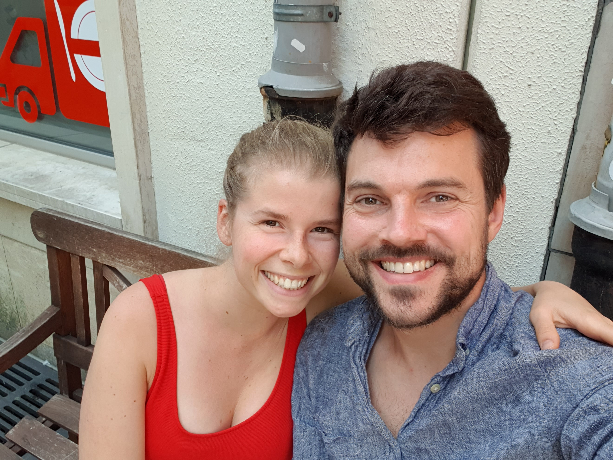

Hi, my name is Aleks!
I'm 35 years old and I was born in Croatia. I have a lot of family living in the former Yugoslawian countries. Every time my wife and I visit them we realize how many dogs are living in the streets, eating what is thrown away, being beaten by humans and injured by cars.
We have taken in two former stray dogs from Serbia and are always contemplaiting rescuing a third one, but there are so many and we want to do more. Donating money regularly and voluntering in shelters is great, but now we want to take a step further. Since I inherited some land in a village close to the city Sekovici in Bosnia & Hercegowina, I have been planning for years to open a shelter for dogs in need.
Due to the lack of funds and affection for stray dogs there are no shelters present in the surrounding area, however all city administrations I talked to are very much interested in cooperating with a possible new shelter in the region.
The administrations are willing to support us with non-monetary supplies such as construction materials, fire wood, and machines. However we still need to raise additional 9.000 € to start with the construction.
The first steps are the following:
1. Build a fence to secure roughly 10.000 m² of land
2. Build a concrete shelter with a capacity for at least 100 dogs
3. Provide electricity and water for the shelter
Electricity is already available at a nearby house and only needs to be extended a couple of hundreds of meters. We are already in touch with the local electricity grid provider. Water is available in form of natural springs, which can be used the whole year. The spring water needs to be collected in a basin from where it can be provided to the shelter with a pump.
We are grateful for all of your help!
Lima & Aleks

Comments
If you wish to leave a comment or start a discussion please feel free to enter your message below via your GitHub account.